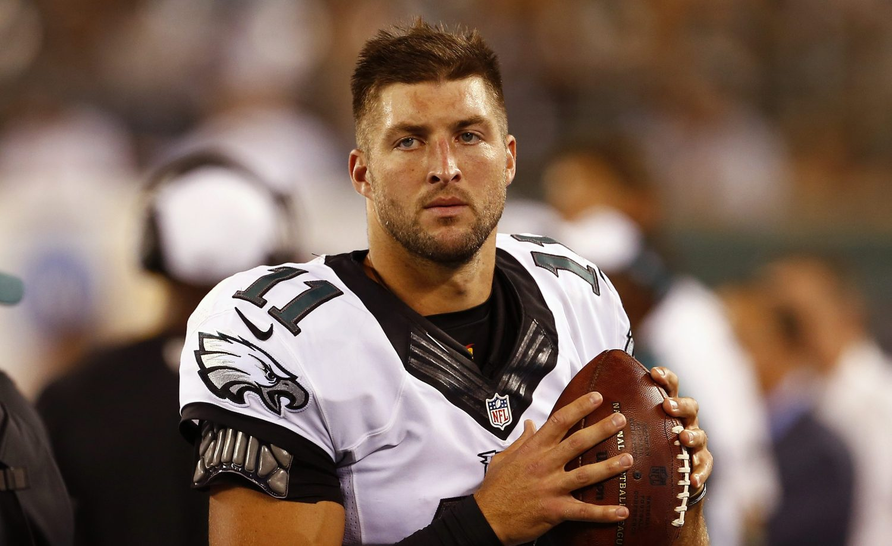

Philadelphia Eagles
Tebow signed a one-year contract with the Philadelphia Eagles on April 20, 2015, and he was in competition with Matt Barkley for the Eagles third-string quarterback job. The Eagles head coach at the time was Chip Kelly who had an extremely successful time as coach of the Oregon Ducks. Kelly was known for his fast paced offense and sometimes unorthodox tactics. Tebow played all four games in the preseason with no starts, going 21-of-36 for 286 yards, two touchdowns, and one interception, while rushing for 82 yards and a touchdown. He was released by the team on September 5, following the fourth preseason game. This was the last time Tebow appeared on an NFL team and afterwards he went on to play minor league baseball for several years as well as doing broadcast work.